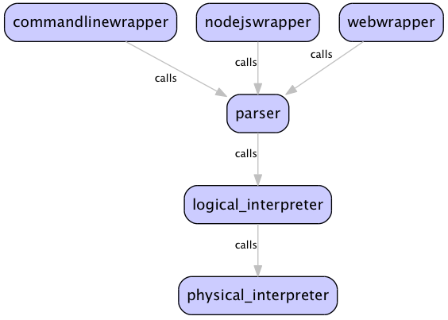

Sid spec for
wordpic - a graphviz-style tool for diagramming. v 1.0
To build
wordpic - a graphviz-style tool for diagramming. v 1.0
with features:
ability to describe pictures/diagrams in a near-graphviz style
abilty to render the picture/diagram in various formats
specifically, the ability to output in "enriched source" format a la Graphviz
ability to render on an html5 canvas
with capabilities:
to run as a command line tool similar to dot
to run online from within a browser
to run from a nodejs server
Requires:
building:
parser
:
a parser to read the input file and convert to a json AST - OMETAJS PROTOTYPE DONE
logical_interpreter
:
to process the AST and convert it into a logical grid of objects
physical_interpreter
:
to process the logical grid and convert them into physical canvas objects
commandlinewrapper
:
to wrap the above components such that they're callable from the command line
nodejswrapper
:
to wrap the above components such that they're calllable as a nodejs service
webwrapper
:
to wrap the above components such that they're calllable from a web page
defining:
the declarative input syntax - PARTIALLY DONE
the imperative output syntax - PARTIALLY DONE
the interaction between logical and physical primitives - TBD
using:
os :
any
language :
javascript
to realize the architecture:

suggestion
add definitions for declared components